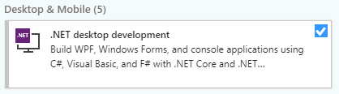
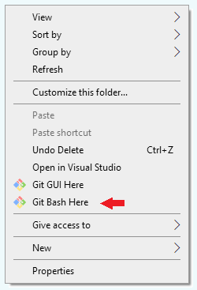
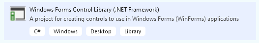
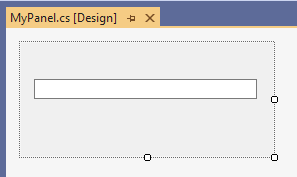
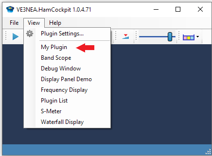
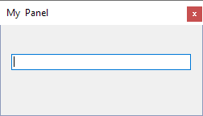
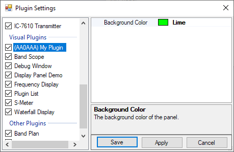

Creating Your First Plugin
In this tutorial, you will learn how to create a simple plugin for Ham Cockpit that shows a visual panel with a text input box. The user will be able to change the text in the box, and the changes will be preserved between the sessions. The color of the panel will be configurable in the Plugin Settings dialog.
Prerequisites
- Install Visual Studio Community Edition, make sure that the .NET desktop development component is selected:

Install Git.
Create a folder for your projects. We will assume that the folder name is
C:\MyProjects.Open this folder in File Explorer, right-click and click on Git Bash Here in the popup menu:

- Type this command in the Git Bash window to clone Ham Cockpit:
git clone https://github.com/VE3NEA/HamCockpit.git
This will clone the HamCockpit repository to this folder:
C:\MyProjects\HamCockpit
The repository contains a .NET solution with the Plugin API assemblies and example plugin projects.
- In the cloned folder, double-click on the solution file,
HamCockpitPlugins.sln,
to open it in Visual Studio.
Click on Build / Rebuild Solution in the VS menu to verify that the solution builds without errors.
Creating Your Project
- Right-click on the solution in the Solution Explorer, click on Add / New Project in the menu, and select the Windows Forms Control Library. Click on Next.

Choose a name for your project. The name must start with author's ID, such as your Ham Callsign. Assuming that your callsign is
AA0AAA, and your plugin name isMyPlugin, the project name should beAA0AAA.HamCockpitPlugins.MyPluginEnter the project name in the Project name field of the Configure your new project dialog, and
C:\MyProjects\HamCockpitin the Location field. Under Framework select ".NET Framework 4.8". Click on Create.Right-click on the References entry of your new project, click on Add Reference / Projects, and tick the checkbox next to
VE3NEA.HamCockpit.PluginAPI.dll, click on OK.Double-click on Properties / AssemblyInfo.cs in your project, enter your own data in the Company and Copyright fields:
[assembly: AssemblyTitle("AA0AAA.HamCockpitPlugins.MyPlugin")]
[assembly: AssemblyDescription("")]
[assembly: AssemblyConfiguration("")]
[assembly: AssemblyCompany("AA0AAA Ham Shack")]
[assembly: AssemblyProduct("AA0AAA.HamCockpitPlugins.MyPlugin")]
[assembly: AssemblyCopyright("Copyright © John Smith AA0AAA 2020")]
[assembly: AssemblyTrademark("")]
[assembly: AssemblyCulture("")]
- Right-Click on the project, click on Properties / Build. Enter
..\Releasein the Output path box for all configurations so that the compiled plugin is created in the folder where Ham Cockpit can find it.
Creating the Plugin Class
Right-click on your project,
click on Add / New Item in the popup menu, select
Visual C# Items / Class. Enter MyPlugin in the Class name field, click on Add.
This will generate MyPlugin.cs with the following code:
namespace AA0AAA.HamCockpitPlugins.MyPlugin
{
class MyPlugin
{
}
}
Now let us turn this class into a HamCockpit plugin. To be a plugin, it must
export the IPlugin interface. Since we want MyPlugin to have a visual panel, we will
export IVisualPlugin as well:
[Export(typeof(IPlugin))]
[Export(typeof(IVisualPlugin))]
class MyPlugin : IPlugin, IVisualPlugin
{
}
As soon as we enter this code, Visual Studio underlines the unknown identifiers with a red line. Let us fix this.
Place your cursor on the
Exportword, pressCtrl-.to invoke the Quick Actions menu, and selectAdd reference to "System.ComponentModel.Composition".Press
Ctrl-.onIPluginand selectusing VE3NEA.HamCockpit.PluginAPI.
This will add two references to the unit:
using System.ComponentModel.Composition;
using VE3NEA.HamCockpit.PluginAPI;
With these references in place, VS recognizes all identifiers in our code, but there is
another problem: the IPlugin and IVisualPlugin interfaces are still underlined
because they are declared but not implemented. Let us fix this as well.
Press Ctrl-. on IPlugin
and select Implement interface,
do the same for IVisualPlugin. Now you can rebuild the project and verify
that there are no build errors.
Implementing IPlugin
Quick Actions created the stubs for the interface methods and properties. Let us put some real code in the stubs. We will start with the easy ones:
public string Name => "My Plugin";
public string Author => "AA0AAA";
public bool Enabled { get; set; }
public ToolStrip ToolStrip => null;
public ToolStripItem StatusItem => null;
Name and Author simply return the plugin name, as it will appear in the
Ham Cockpit menu, and author's ID. Enabled is the setting that the user can change
in the
Plugin Settings dialog
by ticking the checkbox next to the plugin. Finally,
ToolStrip and StatusItem return null because our plugin does not need to have
any controls on the toolbar or status bar.
Now the only member of IPlugin that still needs to be implemented is Settings.
We will deal with this shortly.
Designing the Panel
When VS created the project, a blank user control was created in the UserControl1.cs unit.
Press F2 on this unit and rename it to MyPanel.cs. VS will prompt you to rename the
class as well. Click on Yes.
Now we can do some visual stuff. Double-click on MyPanel.cs in Project Explorer to open it in the visual designer. Resize the panel to a smaller size, then click on View / Toolbox in the menu and drag a text box from the Toolbox to your panel:

Click on View / Properties Window in the menu. Select the text box, change its name to MyTextBox
and its Modifiers property to Internal so that we can access it from the code.
Implementing IVisualPlugin
The methods of the IVisualPlugin interface allow the host application to determine
if the plugin can create a new panel, to create panels, and to destroy them. Implementation
of this interface is trivial:
private MyPanel panel;
public bool CanCreatePanel => panel == null;
public UserControl CreatePanel()
{
panel = new MyPanel();
panel.Name = "My Panel";
return panel;
}
public void DestroyPanel(UserControl panel)
{
this.panel = null;
}
CreatePanel creates an instance of the MyPanel class and gives it a name that will appear
on the panel's caption bar. A reference to the panel is stored in the panel field.
DestroyPanel sets panel to null, effectively destroying the panel.
CanCreatePanel ensures that at most one panel can exist at any given time.
You could allow an unlimited number of panels to be created, as in the
Display Panel Demo example,
or a fixed number of panels.
The user can create visual plugin panels using the View menu. This menu shows all plugins that
implement IVisualPlugin, those plugins whose CanCreatePanel returns false are grayed in the menu.
Creating the Settings class
Ham Cockpit has a built-in mechanism for storing, reloading and editing the plugin settings
in a centralized way. All you have to do to make use of this mechanism is to implement the
Settings class and expose it via IPlugin.Settings.
Let us create the Settings class. Right-click on the project, click on Add / New Item / Class,
enter Settings in the Name field, and click on Add. Add the following code to the created unit:
using System.ComponentModel;
using System.Drawing;
namespace AA0AAA.HamCockpitPlugins.MyPlugin
{
class Settings
{
[DisplayName("Background Color")]
[Description("The background color of the panel.")]
[DefaultValue(typeof(Color), "Control")]
public Color BackColor { get; set; } = SystemColors.Control;
[Browsable(false)]
public string Text { get; set; }
}
}
In the Settings class, we simply add properties for all values that we want to be stored
between the program starts. We have added two properties, BackColor that will store the color of the panel,
and Text that will store the text entered by the user.
The host application will save and restore both settings defined in this class. By default, it also
allows the user edit add all public properties in Settings. Since we want only the color to appear
in the
Plugin Settings dialog,
but not the text, we decorate the Text property with the [Browsable(false)] attribute.
The Plugin Settings dialog uses the PropertyGrid control for editing the settings of the plugins. There are many ways to customize the appearance of the properties in the grid. Many good tutorials on the subject are available on the Internet. This and this are just two examples.
For the BackColor property, we add the DisplayName and Description attributes that PropertyGrid
will use to display the setting name and description, and theDefaultValue attribute that
the Reset menu command in the property grid will assign to the setting.
Implementing IPlugin.Settings
Now that we have the Settings class, we can implement the IPlugin.Settings property in MyPlugin:
private Settings settings = new Settings();
public object Settings { get => settings; set => ApplySettings(value); }
private void ApplySettings(object value)
{
settings = value as Settings;
if (panel != null)
{
panel.MyTextBox.Text = settings.Text;
panel.BackColor = settings.BackColor;
}
}
private void TextChangedHandler(object sender, EventArgs e)
{
settings.Text = panel.MyTextBox.Text;
}
The settings object is stored in the private settings field. The getter of
IPlugin.Settings simply returns settings, and the setter assigns a new value
to settings and applies the settings to the panel, if it exists.
TextChangedHandler is an event handler that updates the settings when the text
in the edit box changes.
The last thing we need to do is modify the CreatePanel method to apply the settings
to the newly created panel and subscribe to its TextChanged event:
public UserControl CreatePanel()
{
panel = new MyPanel();
panel.Name = "My Panel";
//apply current settings
ApplySettings(settings);
//subscribe to the TextChanged event
panel.MyTextBox.TextChanged += TextChangedHandler;
return panel;
}
Finished MyPlugin.cs
The finished MyPlugin.cs unit looks like this:
using System;
using System.ComponentModel.Composition;
using System.Windows.Forms;
using VE3NEA.HamCockpit.PluginAPI;
namespace AA0AAA.HamCockpitPlugins.MyPlugin
{
[Export(typeof(IPlugin))]
[Export(typeof(IVisualPlugin))]
class MyPlugin : IPlugin, IVisualPlugin
{
private MyPanel panel;
private Settings settings = new Settings();
#region IPlugin
public string Name => "My Plugin";
public string Author => "AA0AAA";
public bool Enabled { get; set; }
public ToolStrip ToolStrip => null;
public ToolStripItem StatusItem => null;
public object Settings { get => settings; set => ApplySettings(value); }
#endregion
#region IVisualPlugin
public bool CanCreatePanel => panel == null;
public UserControl CreatePanel()
{
panel = new MyPanel();
panel.Name = "My Panel";
panel.MyTextBox.TextChanged += TextChangedHandler;
ApplySettings(settings);
return panel;
}
public void DestroyPanel(UserControl panel)
{
this.panel = null;
}
#endregion
private void ApplySettings(object value)
{
settings = value as Settings;
if (panel != null)
{
panel.MyTextBox.Text = settings.Text;
panel.BackColor = settings.BackColor;
}
}
private void TextChangedHandler(object sender, EventArgs e)
{
settings.Text = panel.MyTextBox.Text;
}
}
}
Testing the plugin
Press Ctrl-B to build the project, open the Release folder
and double-click on HamCockpit.exe.
When the program starts, click on the View menu - and see your plugin listed!

Open My Plugin and play with it.

Resize it, dock it, enter some text in the text box. Close it and open again. Exit the program and restart, see that the text you entered is preserved.
Now open the Plugin Settings dialog, select your plugin and change its background color:

The color is also remembered between the sessions.
Congratulations!
Your first plugin for Ham Cockpit is finished. It has a visual panel, resizable and dockable, it accepts user input, remembers its state when the program is closed and has settings that the user can edit in the Plugin Settings dialog. It's time to start your own plugin project!